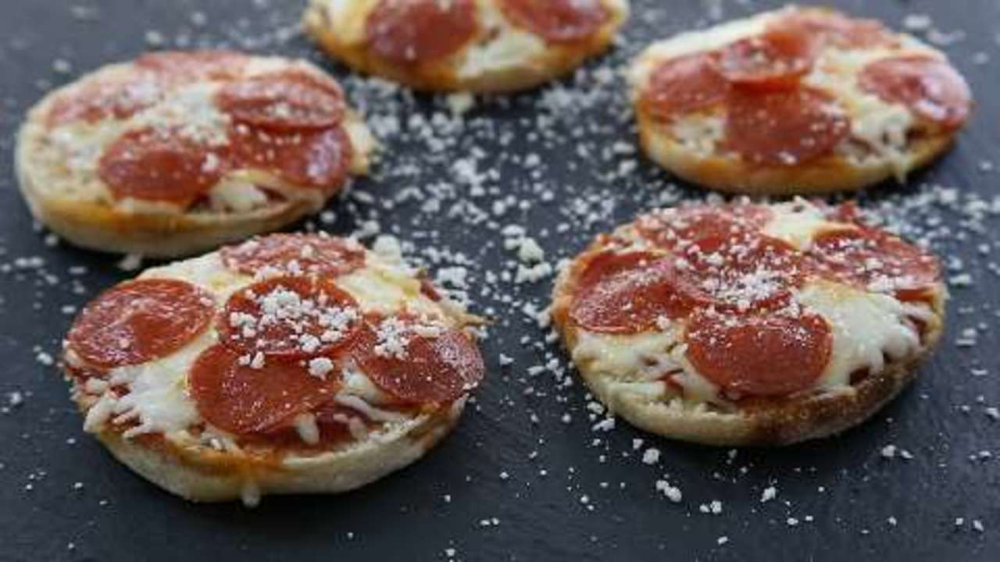

English Muffin Pizzas

Description
Fast and VERY kid friendly.. they can make them and all you have to do is bake them! Pizza sauce, cheese and their choice of topping makes this a great snack or anytime meal!
Ingredients
- English Muffins
- Marinara Sauce
- Shredded Mozzarella Cheese
- Pepperonis
Steps
- Preheat the oven to 375 degrees
- Place the English muffin halves cut side up onto a baking sheet. Spoon some of the pizza sauce onto each one. Top with mozzarella cheese and pepperoni slices.
- Bake for 10 minutes in the preheated oven, or until the cheese is melted and browned on the edges.